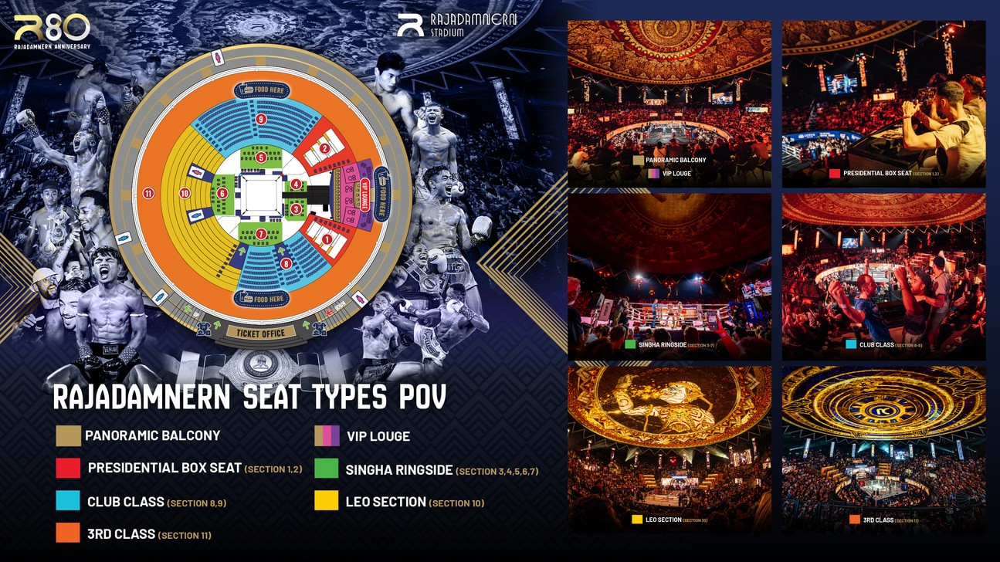

清邁夜間動物園 營業資訊
11:00–21:00開放售票時間
22:00園區關閉時間
提前 30–45 分當日行程請預留憑證處理時間
如何兌換
- 請出示電子憑證
- 出示憑證兌換成實體票券
- 請在售票亭(Ticket Booth)將憑證兌換成實體門票
🎫 TICKET BOOTH 售票亭
請注意:如果您預訂當日行程,請預留 30–45 分鐘處理時間,待訂單處理完畢後方可兌換憑證。
活動時刻表
| 活動 | 時間 |
|---|---|
| ★ 遊園車 Predator Prowl | 14:30–16:00、17:30–21:30(每 30 分) |
| ★ 遊園車 Savanna Safari | 14:30–16:00、18:00–20:30(每 30 分) |
| ★ 野生動物秀 Wild Animal Show | 16:30、18:35、20:15 |
| ★ 老虎秀 Tiger Show | 15:30、17:30、19:30 |
| 與小動物拍照 | 17:30–20:30(僅週五、六、日及泰國公共假日) |
| 牛仔秀與迷你動物園 | 18:00、19:00 |
| 舞蹈表演 Dancing Show | 18:00、19:00、20:00 |
| 美洲豹步道 Jaguar Trail | 11:00–20:00 |
| 老虎世界 Tiger World | 11:00–20:00 |
| 音樂噴泉秀 | 18:15、19:15、20:45 |
| 學習中心 Learning Center | 週一至五 11:00–17:00;週末及假日 11:00–20:00 |
標示 ★ 的活動,每張門票可參加一次。時刻表更新日期:1 Jun 2026,實際以現場公告為準。
地圖位置
北碧府野生動物園 Safari Park Kanchanaburi
曼谷出發的北碧府野生動物園一日遊(AK Travel)。
09:00–17:00每日營業(以現場公告為準)
北碧府 Bo Phloi99 Lat Ya-Bo Phloi Rd, Kanchanaburi 71160
克里普索人妖秀門票 Asiatique Calypso
曼谷 Asiatique 河濱夢幻市集內的克里普索人妖秀(Calypso Cabaret)。
19:45 / 21:30每日兩場(以預訂場次為準)
Asiatique 河濱2194 Charoenkrung 72-76 Rd., Bang Kho Laem, Bangkok 10120
【官方】Rajadamnern 泰拳館泰拳比賽
預計購買 2027/1/2(週六) 的門票——週六固定為特別活動 Rajadamnern World Series(RWS)。
19:00–22:002027/1/2(週六)・Rajadamnern World Series(Klook 官方週間賽程)
Rajadamnern 體育館8 Ratchadamnoen Nok Rd, Pom Prap Sattru Phai, Bangkok 10100

清邁一日遊：藍廟＋白廟＋黑屋博物館＋長頸族村
清邁出發的清萊一日遊,一次逐一拜訪藍廟、白廟、黑屋博物館與長頸族村。
景點與營業時間
指定接送地點
請於出發時間前 10 分鐘抵達;供應商將於行前再確認接送時間。
曼谷一日遊：大皇宮、玉佛寺、臥佛寺、鄭王廟
曼谷必訪地標一日遊,一次逐一拜訪大皇宮、玉佛寺、臥佛寺與鄭王廟。
景點與營業時間
集合地點
入場前請聯繫身穿藍色 T 恤並帶有 TTD Global 標誌的工作人員。可選出發時間:09:00(請務必以預訂所選時間參加)。實際時間於預訂後確認。